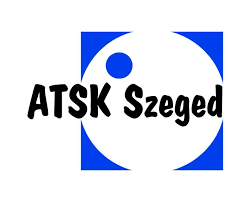
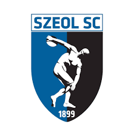
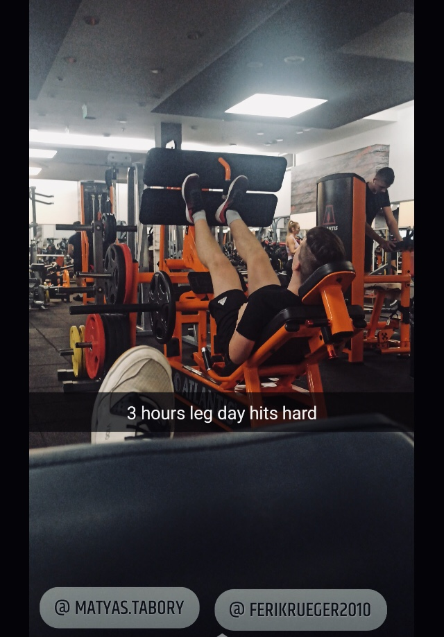
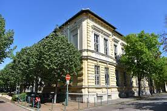

Én, Tábory Mátyás
Magamról pár szóban
- Szegeden születtem, itt is élek.
- 16 éves, 184cm magas fiatalember vagyok.
- Előző iskolám a Tarjáni Kéttannyelvű Általános Iskola volt.
- Jópár éve érdekel a programozás, ezért választottam ezt az iskolát.
- Ez a jelenlegi órarendem
, ami miatt néha otthon telesírom a párnámat
Érdeklődésem, hobbik, sportok
- Érdekelnek a számítógépes játékok, a sportok és az autók.
- Sportok közül a kedvendeim a foci és a ping-pong, de bármilyen labdajátékot szívesen játszok.
- 3 évet pingpongoztam az ATSK Szegednél , majd 2,5-3 évet fociztam a SZEOL SC. csapatában,
ahonnan egy szerencsétlen edzőváltás után jöttem el.
- Jelenleg itt, az iskolában focizok Dankó tanárúrral, és edzőterembe járok heti 3 alkalommal.




Eredményeim
- A Tarján 3-ban 8 évig tanultam németet emelt szinten,
ennek köszönhetően 8. osztály végén sikerült egy B1 szintű német nyelvvizsgát letennem.
- Pár évvel korábban a Diákolimpián ping-pongból egy bronzérmet is sikerült bezsebelnem.